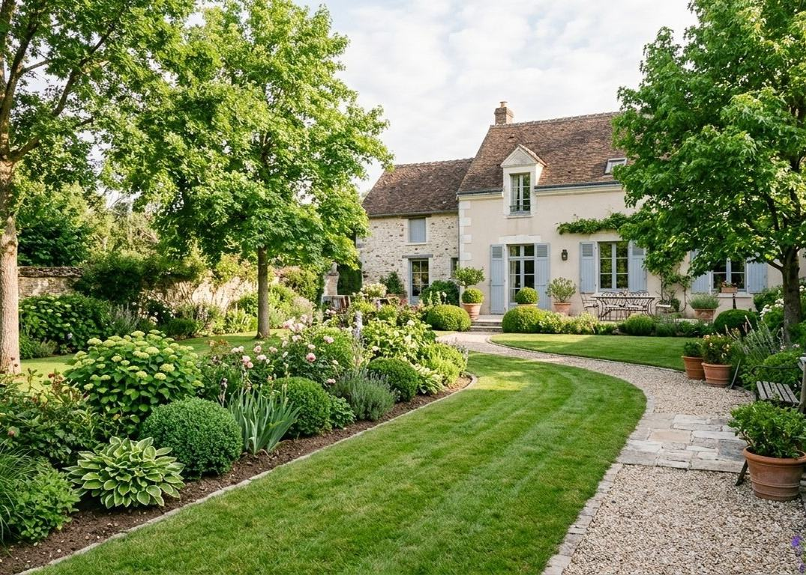

Paysagiste à Saint-Germain-de-la-Grange (78)
Jardins créés et entretenus à Saint-Germain-de-la-Grange
Les Jules de l'Arbo aménagent et entretiennent vos jardins à Saint-Germain-de-la-Grange et aux alentours.
- Aménagement paysager
- Saint-Germain-de-la-Grange (78)
- Devis sur demande
Nos prestations
Du jardin créé au jardin entretenu
Création, plantations et entretien : les principaux domaines d'intervention.

Aussi : Plantations Engazonnement Taille de haies

À propos
Un paysagiste de Saint-Germain-de-la-Grange
Les Jules de l'Arbo est une entreprise d'aménagement paysager installée à Saint-Germain-de-la-Grange, dans les Yvelines.
Julien Germain dirige l'entreprise. Contactez-le pour parler de votre jardin et demander un devis.
Contact
Un projet de jardin ? Parlons-en.
Appelez-nous pour décrire votre projet et demander un devis.
Téléphone06 19 09 58 74
Commune
Saint-Germain-de-la-Grange (78)